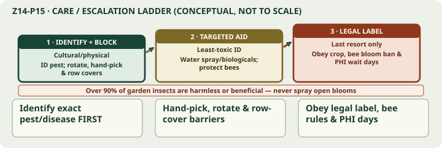

Z14-P15 · Food production and preservation · New manuscript
Apply Integrated Pest Management (IPM) before reaching for pesticides
Control garden insects and plant diseases effectively while protecting pollinators, beneficial predators, and food safety.
When it applies · Backyard and small-acreage vegetable plots facing beetles, caterpillars, aphids, or fungal leaf spots.
Equipment · Hand lens/Extension ID guide, floating row covers, soapy water/hand-picking bucket, and exact pesticide labels if ever used.

Actions
- Identify the EXACT insect or disease BEFORE acting—over 90% of garden insects are harmless or beneficial predators (lady beetles, lacewings, native bees), and treating a fungal blight or nutrient deficiency with insecticide wastes effort and harms pollinators.[P03]
- Start with least-toxic physical and cultural barriers first: crop rotation, resistant varieties, hand-picking squash bugs/Colorado potato beetles into soapy water, strong morning water blasts for aphids, and lightweight insect-exclusion row covers over brassicas/cucurbits (removed once flowers need bee pollination!).[P03]
- If an approved organic or conventional garden pesticide is ever used, read and obey EVERY word of the legal label—especially target crop, pollinator spray-timing rules (never spray open blooms), PPE, and mandatory Pre-Harvest Interval (PHI) waiting days before eating.[P03, P16]
Failure recognition · Spraying a broad-spectrum insecticide onto blooming squash flowers at noon, killing honeybees/bumblebees so zero squash fruit sets.[P03]
Verify · Confirm exact pest identification, physical/cultural steps tried first, and legal label/PHI obeyed strictly if any product is applied.[P03]
Stop or change course · Never apply non-food ornamental/lawn pesticides or unlabeled homemade chemical mixes onto edible vegetable crops.[P03, P16]
Evidence and editorial notes
- P03 · University of Minnesota Extension · Planting the Vegetable Garden (current web edition)
- Section: Watering, Mulching, Crop Rotation, and Integrated Pest Management · Conditions: Home vegetable plots across seasonal dry/wet swings
Support: Water deeply at the soil base rather than overhead foliage to conserve moisture and curb fungal disease, mulch soil to stabilize temperature and weeds, rotate plant families across seasons, and identify pests before choosing least-toxic controls.
Limitations: Untreated rainwater or suspect surface water should not be splashed onto ready-to-eat leafy crops immediately before harvest. · Conflicting evidence: None; aligns with FSG-4 clean produce handling.
Editorial note: Grounds resilient low-input gardening and biological pest management. · Specialist reviewer: Extension horticulture and integrated pest management
Primary source · checked 2026-11-24 - P16 · USDA / FDA / CDC · Four Steps to Food Safety (current web edition)
- Section: Clean, Separate, Cook, Chill > Produce Washing and Cross-Contamination · Conditions: Garden-to-kitchen harvesting, food prep, and preservation workspaces
Support: Wash hands 20 seconds with soap and safe water, scrub firm produce under running safe water before peeling/cutting, keep raw animal foods strictly separate from ready-to-eat produce, and sanitize prep surfaces and utensils between tasks.
Limitations: Washing produce with soap, detergent, or bleach is unsafe and not recommended. · Conflicting evidence: None; extends F01–F03 into garden harvest and home preservation.
Editorial note: Anchors kitchen sanitation and cross-contamination barriers in Z14. · Specialist reviewer: Food safety and public health
Primary source · checked 2026-11-24
Source lineage · UMN Extension Vegetable Crop Management; new manuscript · Classification · New manuscript.